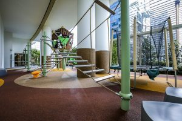
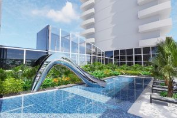
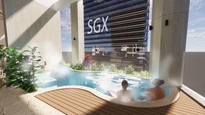

Phase 01
Lobby and arrival experience
The arrival sequence is refreshed through a calmer lobby composition, using warm surfaces, clear circulation and improved visual order to create a more composed residential threshold.

Vertical greenery and renewed communal spaces for a residential tower in Singapore's downtown core.
One Shenton is a luxurious residential development in the heart of the city's downtown core planning region.
For One Shenton, vertical greenery columns have been added at the pedestrian level and adjacent to busy streets. Aside from visual relief for the building's occupants and members of the public, the green walls help to reduce one's exposure to air pollution and positively contribute to the therapeutic needs of people living and working in urban areas.
The overall costs, including installations on the building facade, came up to about $750,000, with $330,000 subsidised by NParks.
The arrival sequence is refreshed through a calmer lobby composition, using warm surfaces, clear circulation and improved visual order to create a more composed residential threshold.
Shared amenities are reorganised with a lighter, more refined language, supporting daily routines while keeping the spaces practical, comfortable and quietly elevated.

The pool deck and family zones balance leisure with clarity, introducing a softer amenity experience through considered views, proportions and outdoor usability.

Vertical planting and elevated sky spaces bring greenery into the tower experience, adding visual relief while supporting a calmer connection between the development and its dense urban setting.
